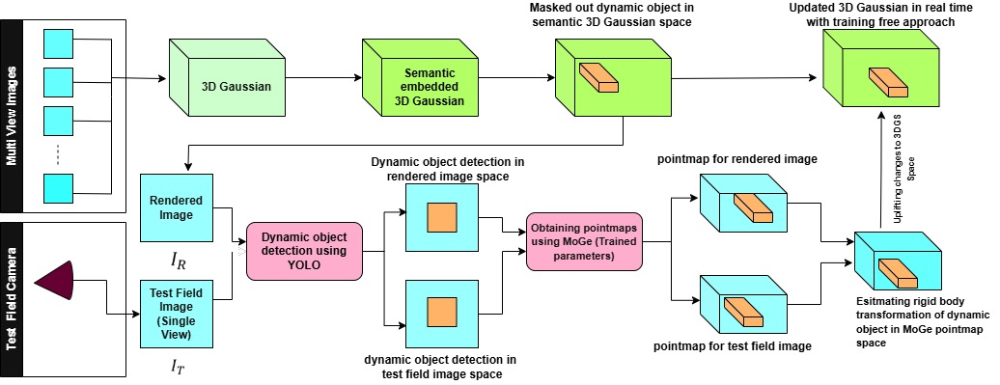

Authors: Saurabh Vidyarthi
Institution: Indian Institute of Science, Bangalore
This work introduces a training-free method that updates the pose of moving objects in a static 3D Gaussian Splatting (3DGS) scene using only monocular RGB input. It preserves appearance fidelity by only modifying Gaussian positions and orientations, enabling fast and drift-free dynamic scene reconstruction suitable for real-time robotics and digital twin applications.
3D Gaussian Splatting (3DGS) offers real-time, high-fidelity 3D scene rendering by representing environments as millions of 3D Gaussians. However, its dynamic extensions require expensive retraining for each update. Our proposed pipeline overcomes this bottleneck by enabling selective, real-time pose updates for dynamic Gaussians, using a monocular camera and semantic segmentation.
We build upon recent advances in:
A multi-view image set is used to construct the static 3DGS scene. Gradient-Weighted Backprojection embeds semantic features into Gaussians. Dynamic elements are masked out based on class labels (e.g., person, robot).
Estimated transform is scaled to match the 3DGS metric space and applied to dynamic Gaussians. Only position and orientation are updated, leaving appearance unchanged.
Figure: Overall pipeline for monocular 3DGS update using pointmaps.
Figure: Multi-object tracking under indoor and outdoor conditions
This work demonstrates that real-time, training-free tracking of dynamic objects in a semantically enriched 3D Gaussian field is feasible with monocular RGB input. Our method preserves scene photorealism and semantic consistency, delivering low-latency performance suitable for real-world robotics and digital twin applications.